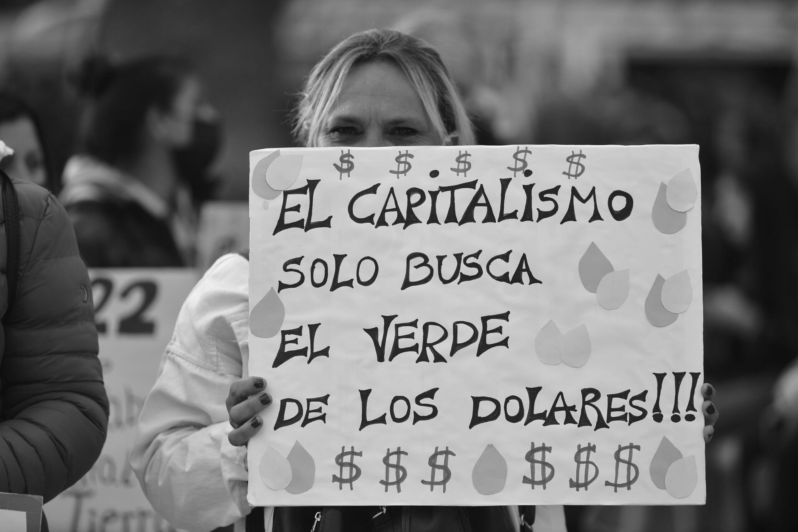
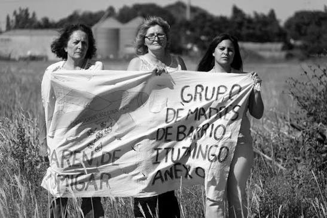
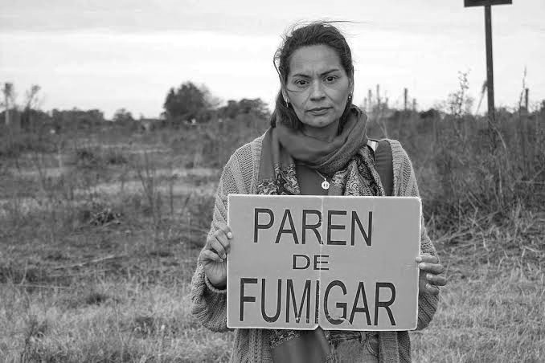

Hannah Arendt definía la banalidad del mal como la normalización burocrática de prácticas dañinas que, despojadas de reflexión ética, podían volverse rutinarias e incuestionables, llegando al punto de causar horrores inimaginables. En esta editorial nos hemos propuesto analizar la problemática de los agrotóxicos y el rol de la ciencia desde esa perspectiva.
Desde hace más de cinco siglos, América Latina ocupa un lugar subordinado en la división internacional del trabajo, caracterizado por la extracción y exportación de bienes naturales destinados al mercado mundial. Esta inserción histórica ha condicionado las estructuras productivas de la región y, simultáneamente, la orientación de sus sistemas científicos y tecnológicos, frecuentemente vinculados a las demandas de los mercados internacionales y a los intereses de los sectores económicos dominantes.

Durante las últimas décadas, este modelo extractivista se ha profundizado en el marco del capitalismo global, dando lugar a un proceso de reprimarización de las economías latinoamericanas. La explotación intensiva de recursos naturales (incluyendo minerales, hidrocarburos, tierras y recursos agropecuarios) se sustenta en la valorización de los territorios a partir de sus denominadas "ventajas comparativas" y en la incorporación creciente de tecnologías destinadas a ampliar la escala y eficiencia de los procesos extractivos. Bajo el discurso del desarrollo, el crecimiento económico y la generación de empleo, estas actividades son presentadas como estrategias necesarias para la inserción competitiva de los países de la región en la economía mundial.
Sin embargo, esta concepción del desarrollo ha generado profundas controversias. Los beneficios económicos para unos pocos que derivan de las actividades extractivas contrastan con impactos ambientales, sanitarios, sociales, culturales y laborales que afectan de manera desigual a las poblaciones y territorios involucrados. En este contexto, las comunidades y organizaciones sociales han cuestionado tanto las consecuencias del modelo como las formas en que se construyen y legitiman los conocimientos utilizados para justificarlo.
La ciencia y la tecnología adquieren así un papel central en estas disputas. Por un lado, son presentadas como herramientas capaces de incrementar la productividad, optimizar el aprovechamiento de los recursos y reducir los impactos ambientales. Por otro lado, sus aplicaciones y desarrollos suelen quedar subordinados a intereses económicos específicos, mientras que determinados riesgos, incertidumbres y conocimientos producidos por actores locales son desestimados o considerados secundarios. De este modo, las controversias tecnocientíficas no se reducen a desacuerdos sobre datos o evidencias, sino que involucran disputas acerca de qué conocimientos son considerados legítimos, quiénes participan en su producción, qué riesgos son aceptables y quiénes se benefician o asumen los costos de determinadas decisiones.
En este escenario, Argentina constituye un caso particularmente relevante. La expansión de actividades vinculadas al agronegocio, la minería, los hidrocarburos no convencionales y otras formas de explotación intensiva del territorio ha generado debates en los que participan organismos científicos, universidades, empresas, organismos estatales, organizaciones sociales y comunidades afectadas. Estas controversias ponen en tensión distintas concepciones sobre el desarrollo y evidencian la necesidad de discutir el papel de la ciencia y la tecnología en sociedades atravesadas por profundas desigualdades económicas, territoriales y ambientales.
Analizar estas disputas permite, por lo tanto, comprender que las decisiones tecnocientíficas no son neutrales. Por el contrario, se encuentran atravesadas por relaciones de poder, intereses económicos, valores culturales y diferentes formas de concebir el bienestar y la relación entre sociedad y naturaleza. Desde esta perspectiva, estudiar las controversias tecnocientíficas asociadas al extractivismo constituye una vía para problematizar no solo los impactos de determinados modelos productivos, sino también el papel que desempeñan la ciencia y la tecnología en la construcción, legitimación y eventual transformación de dichos modelos.
Desde la introducción de la soja transgénica tolerante al glifosato (Roundup Ready) en 1996, el uso de este herbicida se expandió rápidamente a escala mundial. Argentina fue uno de los primeros países en adoptar masivamente este paquete tecnológico, conformado por semillas genéticamente modificadas (OGMs), siembra directa y aplicaciones sistemáticas de glifosato. Esta transformación incrementó (al menos por un tiempo) la productividad agrícola, pero también dio origen a uno de los debates tecnocientíficos más importantes de las últimas décadas.
La controversia no gira únicamente en torno a la toxicidad del glifosato, sino también sobre la forma en que se produce el conocimiento científico, los criterios regulatorios utilizados para aprobar agroquímicos y la relación entre ciencia, estado, empresas y sociedad.
La comunidad científica internacional no mantiene una posición completamente unificada respecto del uso del glifosato. Existen consensos sobre algunos aspectos y desacuerdos sobre otros. Por un lado, numerosos organismos reguladores, como la Autoridad Europea de Seguridad Alimentaria (EFSA), la Agencia Europea de Sustancias Químicas (ECHA), la Agencia de Protección Ambiental de Estados Unidos (EPA) y la reunión de la FAO (Organización de las Naciones Unidas para la Alimentación y la Agricultura) sobre residuos de plaguicidas (JMPR), concluyen que el glifosato no representa un riesgo cancerígeno para la población cuando se utiliza conforme a las condiciones autorizadas. Es importante destacar que estas evaluaciones consideraron estudios toxicológicos regulatorios, muchos de ellos desarrollados por la industria y sometidos a procesos de revisión por las agencias regulatorias. Sin embargo, la metodología empleada por dichos estudios se basó en la medición de la concentración letal 50, con lo que solamente contempló la posible toxicidad aguda, sin considerar la exposición sostenida a mediano o largo plazo ni la exposición prolongada aún en bajas concentraciones en humanos y en el resto del ambiente.
En contraste, en 2015 la Agencia Internacional para la Investigación sobre el Cáncer (IARC), dependiente de la OMS, clasificó al glifosato como "probablemente carcinógeno para los seres humanos" (Grupo 2A).
Argentina, por su lado, constituye un caso paradigmático porque combina una enorme dependencia económica del complejo sojero con una intensa producción científica sobre los impactos ambientales y sanitarios del modelo agrícola. Desde mediados de la década de 2000 comenzaron a multiplicarse investigaciones provenientes de Universidades Nacionales y del CONICET que estudiaron efectos del glifosato sobre organismos acuáticos, embriones de anfibios, biodiversidad, contaminación ambiental y posibles consecuencias sobre la salud humana.
Soja transgénica, glifosato y el caso Carrasco
El episodio más emblemático fue el protagonizado por el biólogo Andrés Carrasco (CONICET-UBA) quien motivado por la problemática que las comunidades fumigadas observaban sobre su salud, realizó estudios toxicológicos acerca del pesticida. En 2009 presentó resultados preliminares que sugerían que formulaciones comerciales de glifosato podían producir malformaciones en embriones de anfibios. Posteriormente estos resultados fueron publicados con revisión por pares en la revista Chemical Research in Toxicology. El trabajo generó una enorme controversia debido a varios factores. Por un lado, los resultados fueron difundidos inicialmente por medios periodísticos antes de su publicación científica, situación utilizada por el discurso científico hegemónico para desprestigiar al grupo de investigación. Por su parte, diversos investigadores cuestionaron aspectos metodológicos y la extrapolación de resultados experimentales hacia la salud humana, por un lado afirmando que las conclusiones se habían obtenido únicamente analizando embriones de anfibios, y por otro, ocultando de la opinión pública, la transversalidad de la regulación génica en etapas tempranas del desarrollo independientemente de qué especie se trate. En el plano social, diferentes organizaciones ambientalistas utilizaron estos resultados para reclamar restricciones al uso del herbicida, mientras que sectores vinculados al agronegocio sostuvieron que la evidencia era insuficiente para modificar las políticas públicas.

PIC:Julia SicilianiEsta controversia trascendió el plano estrictamente científico y se convirtió en un conflicto político, económico y social. A tal punto que el entonces ministro de ciencia y técnica Lino Barañao, con el respaldo político y mediático de la entonces presidenta Cristina Fernández de Kirchner, desestimó públicamente los hallazgos de Andrés Carrasco, dudando de su rigurosidad e incluso ofreciéndose de forma demagógica a beber un vaso de glifosato, no solamente desestimando estos estudios sino también sosteniendo el discurso de su inocuidad.
Además de los datos aportados por Carrasco y su equipo, Lajmanovich y colaboradores aportaron evidencia experimental sobre un aspecto particularmente relevante para el análisis de los impactos del modelo agroindustrial: los efectos de las mezclas de contaminantes pueden ser mayores que los producidos por cada sustancia de manera aislada. En su estudio de 2019, expusieron renacuajos a glifosato, arsenito y a una mezcla de ambos, tanto en ensayos agudos como crónicos. Los resultados mostraron toxicidad sinérgica de la combinación del glifosato junto al arsénico, acompañada por alteraciones en enzimas relacionadas con la detoxificación y el estrés oxidativo, modificaciones de las hormonas tiroideas, cambios en la proliferación de eritrocitos y daño en el ADN. Este trabajo resulta especialmente significativo para Argentina porque pone en cuestión las evaluaciones toxicológicas basadas exclusivamente en la exposición a sustancias individuales. Las poblaciones humanas y ecosistemas de los suelos pampeanos están expuestos simultáneamente a múltiples contaminantes. En este sentido, Lajmanovich plantea la necesidad de considerar las condiciones ambientales concretas de los territorios y no solamente los efectos aislados de cada agroquímico.

PIC:Julia SicilianiDamián Verzeñassi y el Instituto de Salud Socioambiental (InSSA) de la UNR desarrollaron, desde 2010, los denominados Campamentos Sanitarios, una experiencia de epidemiología territorial y participativa que buscó producir conocimiento sobre la situación sanitaria de comunidades rurales expuestas al modelo agroindustrial. Entre 2010 y 2019 se realizaron relevamientos en unas 40 localidades de Santa Fe, Córdoba, Entre Ríos y Buenos Aires, mediante encuestas casa por casa, observaciones territoriales y construcción de perfiles epidemiológicos junto con estudiantes, profesionales y comunidades. Esta línea de trabajo desembocó en el estudio publicado en 2023 sobre ocho localidades rurales de Santa Fe, que incluyó 27.644 personas y comparó la incidencia y mortalidad por cáncer con datos de la población argentina en general. El estudio encontró una razón de incidencia del cáncer de 1,37 veces respecto de la población general, mientras que la mortalidad por cáncer presentó diferencias particularmente marcadas en adultos jóvenes: entre los 15 y 44 años, la mortalidad fue 2,48 veces mayor en mujeres y 2,77 veces mayor en varones. Es importante señalar que, si bien estos resultados muestran una asociación epidemiológica y no permiten, por sí solos, establecer causalidad directa con el glifosato, su principal aporte para el debate tecnocientífico reside también en la metodología: convertir las experiencias y preocupaciones sanitarias de las comunidades en datos epidemiológicos sistemáticos, cuestionando qué problemas de salud son registrados, quién produce conocimiento sobre ellos y qué saberes son considerados legítimos.
Un trigo no tan limpio, el caso HB4
El trigo HB4, desarrollado por la multipremiada científica argentina Raquel Chan de la Universidad Nacional del Litoral y el CONICET y transferido a la empresa Bioceres (previamente incubada en su laboratorio), consiste en una variedad de trigo que incluye varios eventos transgénicos (incorporación de material genético de otras especies). Por un lado, el evento correspondiente a la incorporación del gen HaHB4, proveniente de la planta de girasol que codifica para una proteína involucrada en las respuestas frente a condiciones de estrés ambiental, particularmente el déficit hídrico producido por las sequías. Un segundo evento de transgénesis incluído en el trigo HB4 fue la incorporación del gen bar, proveniente de la bacteria Streptomyces hygroscopicus. Este gen codifica para una enzima que inactiva el glufosinato de amonio y confiere al trigo tolerancia a este herbicida de amplio espectro.
En Argentina, este transgénico fue aprobado en 2020 durante el gobierno de Alberto Fernández para su uso en campo y la producción para la alimentación humana y animal. En contraposición, en octubre de 2020, a través de una carta firmada por 1400 investigadores e investigadoras de distintas formaciones y especialidades, pertenecientes a 35 universidades e institutos de investigación de todo el país, el colectivo "Trigo Limpio" hizo pública su preocupación por la aprobación del trigo transgénico HB4. Dicha carta fue enviada a las autoridades de los ministerios correspondientes, solicitando que se deje sin efecto esta aprobación y se convoque a un amplio debate social, con el objetivo de democratizar la toma de este tipo de decisiones. A pesar de los múltiples intentos de estos sectores de la comunidad científica, el trigo HB4 fue aprobado para su comercialización.
Hasta el momento, de los 66 cultivos transgénicos de soja, maíz, algodón y trigo aprobados en la Argentina, 31 son resistentes al glufosinato de amonio, de acuerdo al listado de Organismos Genéticamente Modificados (OGM) comerciales que publica la Secretaría de Agricultura de la Nación. La mayor parte de ellos fueron introducidos en los últimos 13 años.
Frente a la fumigación en nuestros territorios con este nuevo contaminante (prohibido en la Comunidad Europea), un estudio multidisciplinario que reunió a más de diez científicos de tres universidades nacionales diferentes, pudo comprobar que las moléculas de los herbicidas glifosato y glufosinato de amonio tienen la capacidad de agruparse y formar mezclas perjudiciales para el ambiente, originando un nuevo contaminante que puede permanecer en el suelo, el agua y también, por ejemplo, en residuos de silobolsas. Al mismo tiempo, los investigadores compararon los impactos que el glifosato, el glufosinato de amonio y la combinación de ambos tienen sobre los anfibios, observando una mayor tasa de malformaciones, así como mayor daño genético y más alteraciones en los niveles de las hormonas tiroideas.
A pesar de estos resultados publicados en el año 2022, la empresa Bioceres continuó con la producción de la semilla de trigo transgénico, intentando posicionarla como la solución a la posible merma en la producción alimentaria frente a un eventual colapso producido por el cambio climático. Con este tipo de propaganda logró introducirse no sólo en el mercado argentino, sino también en el mercado brasileño, paraguayo y estadounidense.
Pero para Bioceres no todo es color de rosa. Organizaciones internacionales que defienden la soberanía alimentaria reclamaron la suspensión definitiva de todo permiso de siembra y comercialización del trigo transgénico HB4 en Argentina, Brasil y Paraguay. El pronunciamiento se produjo tras la comprobación de que el trigo transgénico rinde menos que el trigo convencional y en el contexto de la caída de la empresa Bioceres en el mercado. Según datos oficiales, el trigo HB4 rindió un 17 por ciento menos que el trigo tradicional a nivel nacional. Para febrero de 2025, Bioceres había reportado una caída del 24 por ciento en sus ingresos y anunció la salida de la producción y venta de semillas y su alianza con otras firmas extranjeras para estos desarrollos.
Tras este estrepitoso fracaso, diversas organizaciones internacionales demandaron a los diferentes estados la suspensión del trigo HB4 y denunciaron la mentira productiva de la semilla transgénica.
Retomando a Hannah Arendt
Es cada vez mayor la concepción tecnócrata que se tiene de la ciencia desde las políticas científicas hegemónicas. En ella, la ciencia debe perseguir un fin aplicable, lucrativo y al servicio del capital.
Una narrativa que se impone mediante el silenciamiento activo de toda evidencia que la contradiga, como evidencian casos como el proyecto SPRINT. Entre 2021 y 2023, más de 70 voluntarios argentinos aportaron muestras biológicas a este proyecto internacional que reveló un alarmante cóctel de hasta 53 plaguicidas en el aire y 18 en el cuerpo humano, ubicando al país con los niveles más altos de agrotóxicos peligrosos del mundo. Por orden del gobierno de nacional, el INTA inició un sistemático silenciamiento de los resultados desde 2021, finalmente en 2023, el gobierno de Javier Milei abandonó oficialmente el estudio mediante una resolución conjunta de los ministerios de Ciencia y Salud, sepultando las evidencias que exponían la magnitud de la contaminación. Lejos de ser un hecho casual, esta salida se inscribe en la conveniencia sostenida de los gobiernos consecutivos, alineada con el lobby agroindustrial que garantiza impunidad para el avance del modelo extractivista.
El 28 de agosto de 2024, en el portal oficial del CONICET se publicaba una nota titulada "Hito: Estados Unidos aprobó el cultivo del trigo tolerante a la sequía desarrollado por especialistas del CONICET". Esta nota proveniente del seno mismo del organismo pone de manifiesto el servilismo del sistema científico argentino tanto hacia el sector productivo y en particular hacia el agronegocio, como hacia los intereses imperialistas. Poniendo el foco en la maximización de las ganancias, utilizando argumentos falaces como la erradicación del hambre del mundo e inundando los campos (y las poblaciones cercanas y no tan cercanas) de herbicidas tóxicos como el glufosinato de amonio.
Esta lógica de la ciencia "útil" corre completamente el foco de la ciencia "para qué" y "al servicio de quién". Por su parte, en esta concepción, el rol de los científicxs se reduce a meros tecnócratas, que sólo realizan procesos y optimizaciones en sus laboratorios, sin ninguna clase de conexión con el ambiente y la sociedad, eludiendo el análisis crítico y ético de los alcances de sus desarrollos.
Tal como planteamos al inicio de nuestra editorial, Hannah Arendt definía la banalidad del mal como el surgimiento de actos atroces a partir de la ciega obediencia de órdenes o de la falta de reflexión al seguir simplemente las "reglas establecidas" del sistema.
La ciencia debe asumir una dimensión política explícita, investigando con rigor pero también con conciencia plena de sus efectos, y ponerse del lado de las comunidades que, en este caso, sufren el veneno, porque la pregunta de fondo no es técnica sino ética: quién decide, con qué criterios y en beneficio de quién hacemos ciencia.
"El suboficial abrió la compuerta trasera y a partir de ahí fuimos arrojando uno por uno a las personas esas. Si bien se escuchaban los ruidos de los motores, el silencio era penetrante". Admitió el marino Adolfo Scilingo en 1995, acerca de los llamados "Vuelos de la muerte", bajo la protección de las leyes de obediencia debida y punto final. En 1997 fue condenado a cadena perpetua en España, en el marco de un viaje por una entrevista televisiva.
Vale la pena el análisis de qué tipo de ciencia y de científicxs queremos. No vaya a ser cosa, que silenciosamente, obedeciendo a las normas establecidas, terminen siendo más las similitudes que las diferencias entre nuestros actos y las atrocidades perpetradas en el momento más oscuro de nuestra historia contemporánea.
Referencias- Massarini, Alicia (2020). ¿Tecnociencia de mercado o Ciencia Digna? Ciencia Digna, núm. 1, mayo 2020, pp. 79-83.
- Massarini, A. y Schnek, A. (2014). Ciencia entre Todxs. Una propuesta de enseñanza. Buenos Aires: Paidós.
- A Paganelli, V Gnazzo, H Acosta, SL López, AE Carrasco (2010). Glyphosate-based herbicides produce teratogenic effects on vertebrates by impairing retinoic acid signaling. Chemical research in toxicology.
- Lajmanovich, R. C., et al. (2019). First evaluation of novel potential synergistic effects of glyphosate and arsenic mixture on Rhinella arenarum (Anura: Bufonidae) tadpoles. Heliyon, 5, e02601.
- Verzeñassi, D., et al. (2023). Cancer incidence and death rates in Argentine rural towns surrounded by pesticide-treated agricultural land. Clinical Epidemiology and Global Health, 20, 101239.
- Ana P. Cuzziol Boccioni, German Lener, Julieta Peluso, Paola M. Peltzer, Andrés M. Attademo, Carolina Aronzon, María F. Simoniello, Luisina D. Demonte, María R. Repetti, Rafael C. Lajmanovich (2022). Comparative assessment of individual and mixture chronic toxicity of glyphosate and glufosinate ammonium on amphibian tadpoles: A multibiomarker approach, Chemosphere, Volume 309, Part 1, 2022, 136554, ISSN 0045-6535, https://doi.org/10.1016/j.chemosphere.2022.136554.
-https://agenciatierraviva.com.ar/el-gran-fracaso-de-la-tecnologia-hb4-pedido-internacional-para-suspender-el-trigo-transgenico/
-https://agenciatierraviva.com.ar/glifosato-y-glufosinato-de-amonio-un-combo-toxico-para-el-ambiente-y-la-salud/